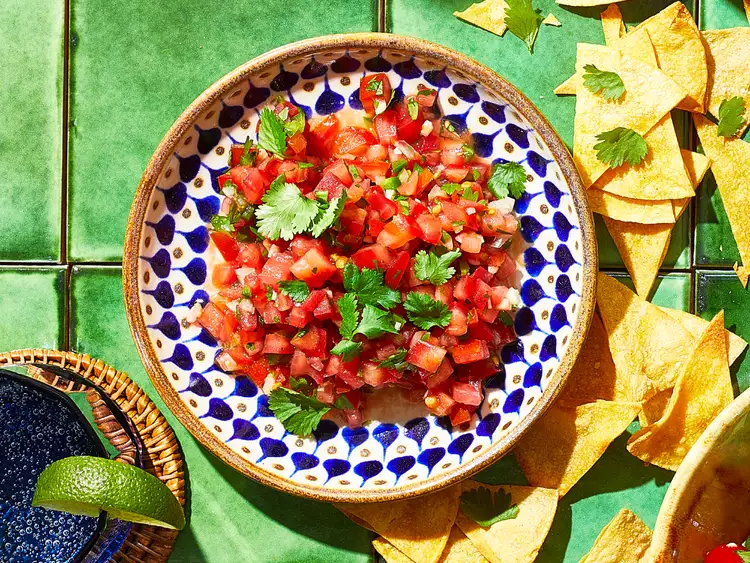

Watermelon-Serrano Salsa

Dip and dollop with this sweet and spicy watermelon-serrano salsa. Try this fresh fruit salsa with chips or served over grilled fish.
Ingredients:
- 1 cup chopped Roma tomatoes
- 1 cup diced watermelon
- 1/4 cup diced red onion
- ¼ cup sugar
- 1 tablespoon chopped fresh cilantro
- 2 teaspoons minced red serrano pepper
- 1/8 teaspoon salt
- 1/8 teaspoon freshly ground black pepper
Steps:
- Stir together tomatoes, watermelon, red onion, lime juice, cilantro, serrano pepper, salt, and black pepper in a bowl.
Serve immediately or chill, covered, up to 2 hours.